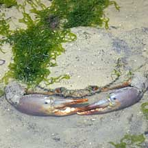
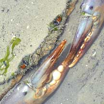
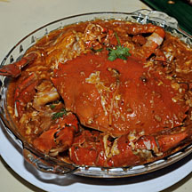
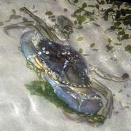
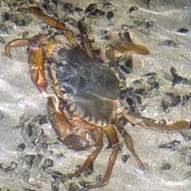
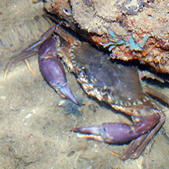
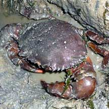
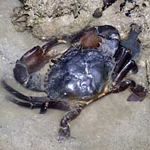

|
|
| crabs text index | photo index |
| Phylum Arthropoda > Subphylum Crustacea > Class Malacostraca > Order Decapoda > Brachyurans > Family Portunidae |
| Mud
crab Scylla sp. Family Portunidae updated Dec 2019 Where seen? This enormous crabs is among our favourite seafood. It is seldom seen and is usually hidden in its burrow in the mangroves. Sometimes, large individuals are seen in other habitats. These are likely to be fully grown adults that were taken from seafood markets and released as part of religious rituals, unfortunately, usually in unsuitable habitats. Features: Body width to about 20cm. Body somewhat fan-shaped with 9 spines on the sides but the last tooth is not enlarged as it is in flower crabs. Mud crabs belong to the same family as swimming crabs and their last pair of legs are paddle-shaped. But because they are such large, heavy crabs, they don't use these legs to swim. Instead, the legs are used like spades to burrow with. Unlike flower crabs, mud crabs are able to stay out of water for some time. They come in various colours ranging from dark green (mostly those from mangroves) to bluish green (those found in open waters). |
 Chek Jawa, Nov 09 |
 |
 It is better known as Chilli crab! |
| There are three species of mud crabs found in Singapore. The Green mud crab (S. paramamosain): body width to about 15cm with orange and green pincers and very sharp teeth between the eyes. The Orange mud crab (S. olivacea): body width to about 18cm with orange pincers. The Purple mud crab (S. tanquebarica): body width to about 20cm with distinct purple pincers. The Mud crab we often eat at restaurants are actually from the Giant mud crab (Scylla serrata) which can grow to about 28cm. These come from Sri Lanka (thus sometimes also called the Sri Lankan crab). This crab is not found in Singapore. What does it eat? This crab is a predator and will eat any animal that it can catch. It appears to prefer snails and clams. Human uses: These crabs are edible and a favourite dish for many Singaporeans. They are traditionally caught by hooking them out of their burrows with long iron rods. |
|
 Changi, Jul 07 |
 Tanah Merah, Oct 10 |
 Sentosa, Nov 11 |
| Mud crabs on Singapore shores |
On wildsingapore
flickr
|
| Other sightings on Singapore shores |
 Punggol, Jun 12 Photo shared by Loh Kok Sheng on flickr. |
 Pasir Ris Park, Nov 08 Photo shared by Loh Kok Sheng on his blog. |
||
 Pulau Pawai, Dec 09 |
Links
|